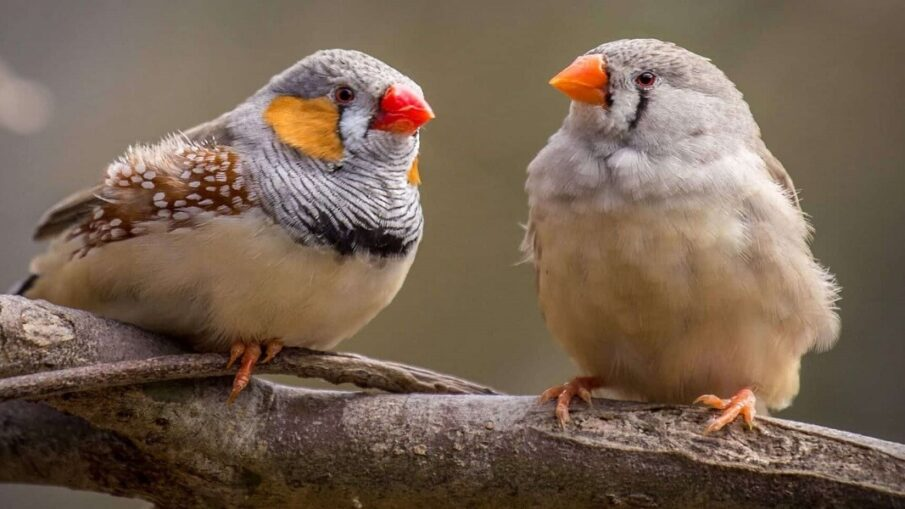

Zebra ispinozu (Taeniopygia guttata), Avustralya kökenli, küçük boyutuna rağmen canlı kişiliği ve kolay bakımıyla dünyanın en yaygın beslenen ötücü kuşlarından biridir. Ortalama 10–12 cm uzunluğa ulaşan bu kuşlar, gri gövde, beyaz karın, turuncu gaga ve yanaklarda turuncu lekelerle dikkat çeker; erkek bireylerde görülen siyah “zebra” çizgileri ise türün en ayırt edici özelliğidir. Doğal yaşam alanlarında sürü halinde yaşayan zebra ispinozları, tohum ve küçük bitkilerle beslenir, ev ortamında ise dengeli yemler ve temiz suyla sağlıklı bir yaşam sürerler. Sosyal ve hareketli yapılarıyla çift halinde beslenmeleri önerilir; yalnız bırakıldıklarında huzursuz olabilirler. Enerjik ve üretken karakterleri sayesinde kolayca yuva yapar ve hızlı üreme gösterirler. Doğru bakım koşullarında 5–7 yıl yaşayabilen zebra ispinozu, yalnızca estetik görünümleriyle değil, neşeli ötüşleri ve uyumlu yapılarıyla da kuş besleme hobisinde özel bir yere sahiptir